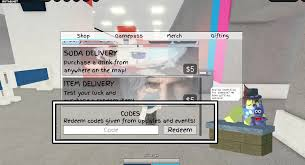
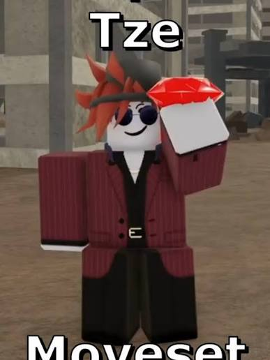

Cуть гри
Суть цієї гри полягає в тому, що це динамічний аренний файтинг (Battlegrounds) у реальному часі, створений за мотивами популярного аніме та манги «Магическая битва» (Jujutsu Kaisen).

Як гратии
Головна мета гри — битися з іншими гравцями на арені, руйнувати все навколо, накопичувати шкалу ультимативної здібності та перемагати.
🕹️ Базове керування (на ПК)
Перед початком бою обов'язково зайдіть у налаштування гри та увімкніть «Auto Run» (автобіг) для плавнішого переміщення.
- WASD — пересування.
- ЛКМ (Ліва кнопка миші) — базова комбінація ударів (M1 combo). Четвертий удар збиває ворога з ніг (ragdoll).
- Пробіл — стрибок. Якщо затиснути пробіл біля стіни та чергувати клавіші A і D, можна зробити до 3-х стрибків по стінах вгору.
- Q — ривок (Dash) у напрямку руху. Також кнопка Q працює як Burst (рагдолл-скасування) — допомагає вирватися зі стану приголомшення, коли вас б'ють (перезарядка 10 секунд).
- F — блок. Захищає від ударів ззаду або збоку, але його можна пробити сильними здібностями (наприклад, Black Flash або Crushing Blow).
- 1, 2, 3, 4 — використання унікальних скілів персонажа.
- R — спеціальна здібність (Spec).
- G — активація Пробудження (Awakening / Розширення території). Стає доступною лише тоді, коли ви заповните жовту шкалу, завдаючи шкоди ворогам.
⚔️ Персонажі для старту
На початку гри вам доступно кілька базових персонажів, прототипами яких є герої аніме:
- Сосуд (Yuji Itadori): Ідеальний для новачків. Має чудову мобільність та сильні ближні атаки. Його контратака Manji Kick здатна заблокувати більшість типів атак у грі.
- Избранный (Satoru Gojo): Персонаж із сильними дальніми атаками та можливістю телепортації. Його ультимейт — знаменита Безкрайня Пустота.
- Неугомонимый Игрок (Hakari): Боєць, який використовує прокляті двері та гральні кульки, орієнтований на агресивний стиль.
💡 Поради для успішної гри
- Комбінуйте атаки: Не просто клацайте мишкою. Зробіть 3 базові удари ЛКМ, потім використайте один зі скілів (клавіші 1-4), щоб продовжити комбо, поки ворог не впав.
- Обходьте блоки: Якщо супротивник постійно стоїть у блоці (F), робіть ривок (Q) йому за спину або вбік, щоб завдати удару туди, де блок не захищає.
- Знищуйте оточення: Будинки та об'єкти на карті руйнуються від потужних ударів. Використовуйте це, щоб завадити огляду ворога або затиснути його у кутку.
